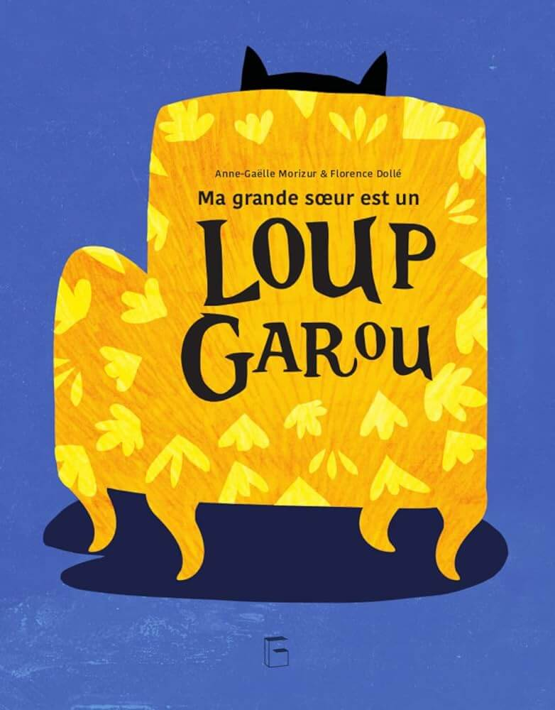
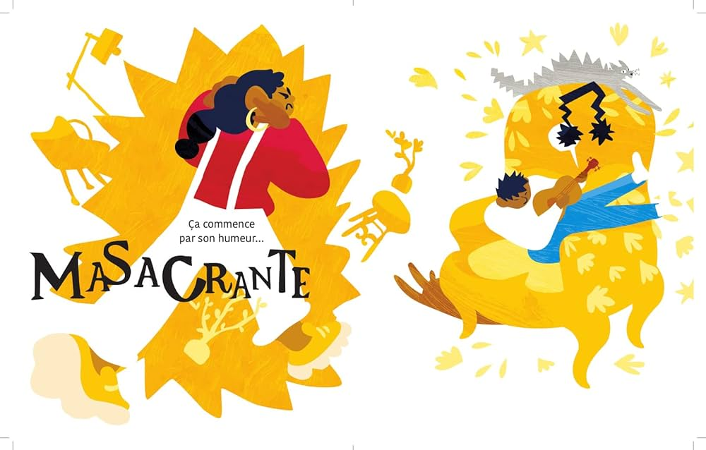
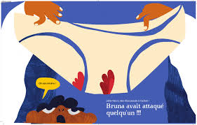

Tous les mois, Bruna est d'une humeur massacrante et s'enferme dans sa chambre. Pour Dino, c'est sûr, elle se transforme en loup-garou… Un jour, il découvre une culotte ensanglantée dans le panier à linge. Ses soupçons se confirment : le loup-garou Bruna a agressé quelqu'un.
Ce livre est tout simplement GÉNIAL pour aborder avec humour et tendresse le sujet des règles et du syndromes prémenstruel. Il est drôle et sans détour, mes élèves l'aiment beaucoup. Je l'ai introduit alors que nous avions déjà abordé le sujet des règles à travers une séquence en science. Cette histoire permet d'approfondir le sujet des règles avec légèreté mais de manière très concrète.
Les élèves sont entré.es sans peine dans ce récit qui les a tenu en haleine jusqu'à ce qu'iels comprennent qu'on parlait en fait des règles de la grande sœur et non d'un véritable loup garou. Ce retournement de situation les a d'abord fait glousser, puis nous a permis d'avoir une discussion très interessante sur le syndrome prémenstruelles et les choses que l'on peut mettre en place pour être un.e bon.ne allié.e lorsque notre camarade a ses règles à l'école (aller chercher un.e adulte, prêter son pull pour le nouer autour de la taille en cas de tache, avoir des protections hygiéniques dans son cartable, rassurer l'autre, lui montrer son soutien…). Les garçons étaient aussi intéressés que les filles et très investis dans leur rôle de potentiel alliés.
J'ai laissé cet album jeunesse à disposition des élèves dans « la bibliothèque de la maîtresse